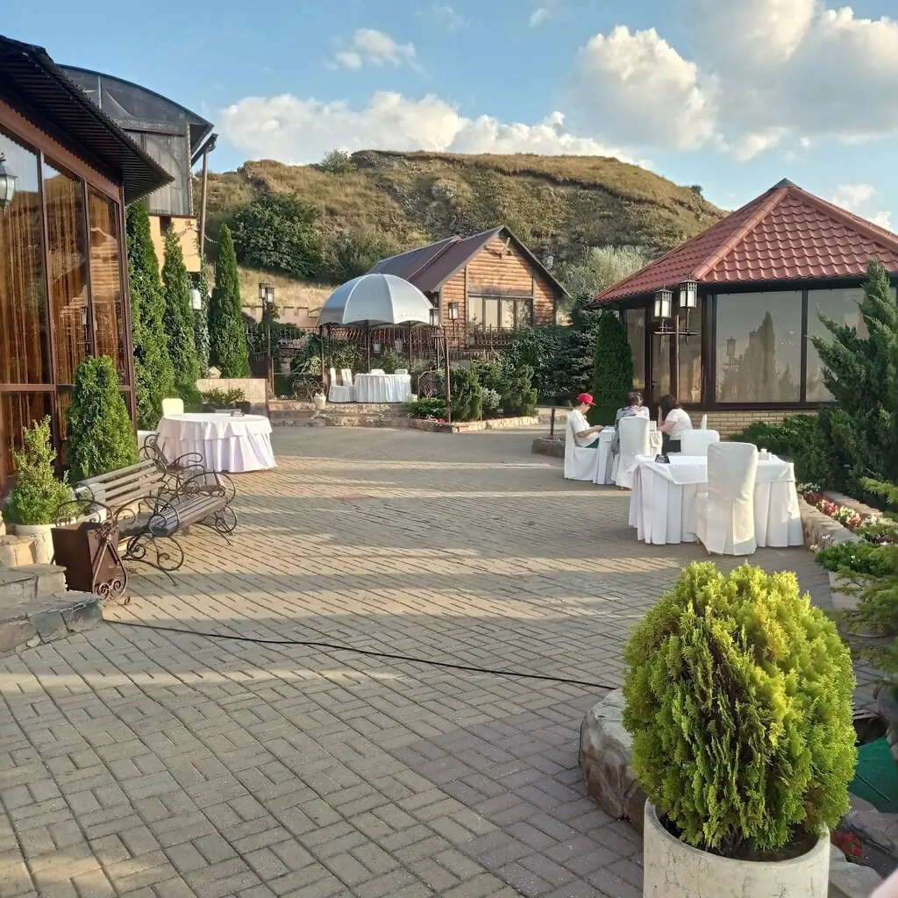
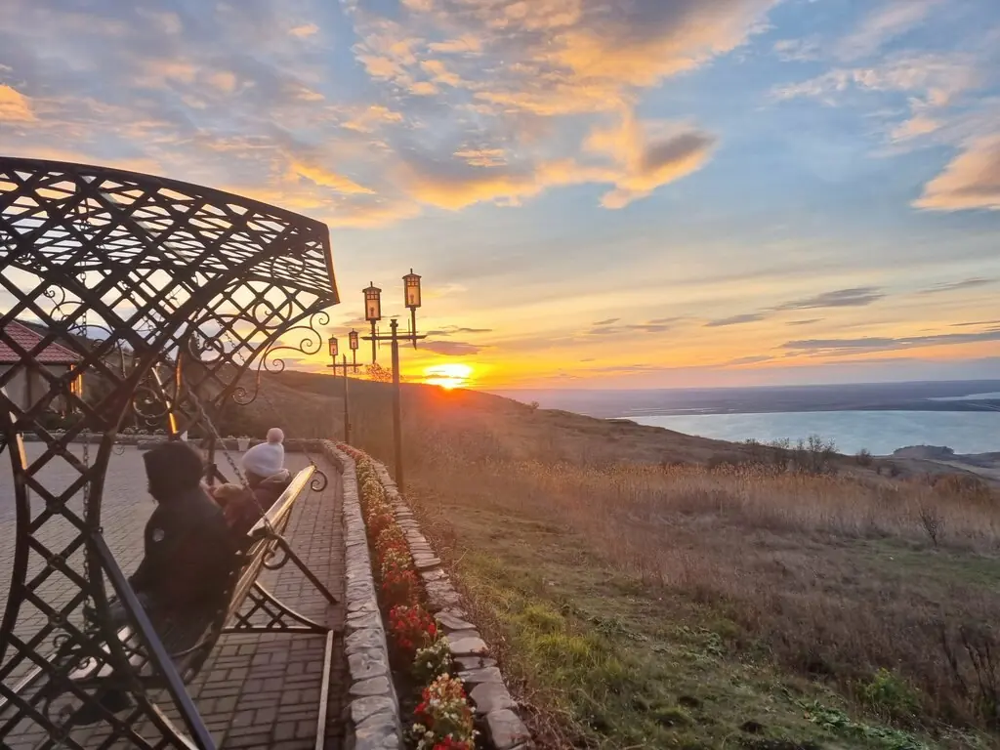
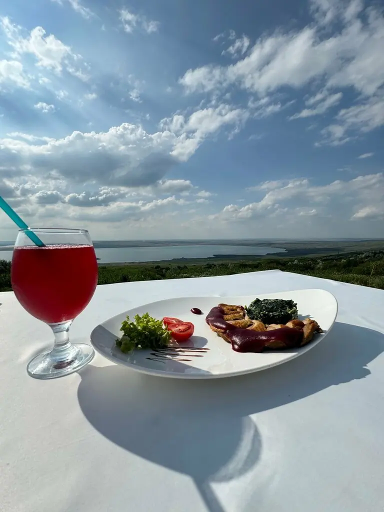
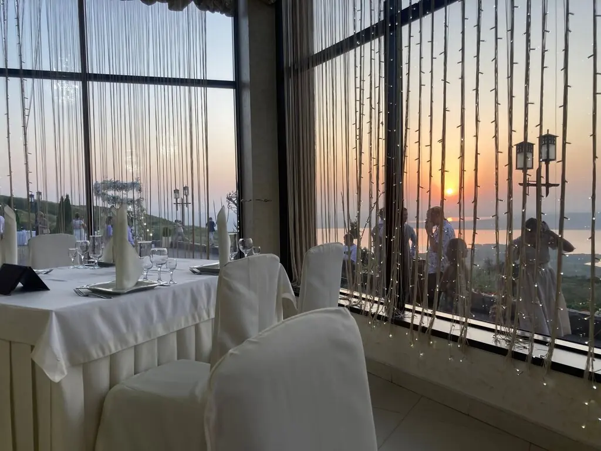
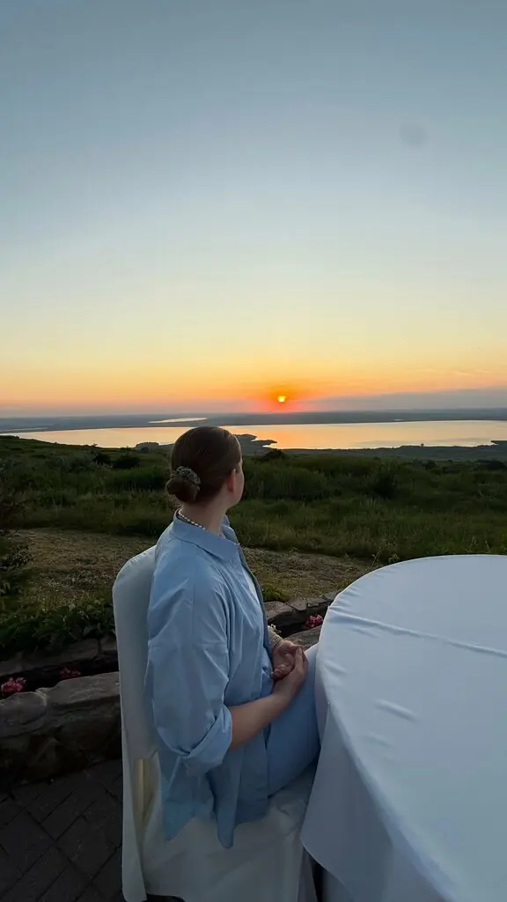

Ставрополь+7 928 300-17-90
Волчьи Ворота
За городом, на холме: вода, лес и закаты. Сюда едут на свадьбы, выпускные и просто посмотреть в окно.
5,0 · 2206 оценок · до 250 гостей
Добыча
Салат Цезарь с курицей495 ₽
Морской цезарь с тигровыми креветками685 ₽
Люля-кебаб, порция390 ₽
Шашлык из свиного антрекота320 ₽
Утка, фаршированная яблоками1 900 ₽
Часть меню с Яндекс Карт, цены и порции уточняйте у официанта.
Вид за воротами



Стая довольна
Замечательное место с прекрасными видами на воду и лесной массив. Закаты это отдельная красота!Ирина Е
Очень красивый вид, проводилась свадьба, всё на высшем уровне.Артем Бурсов
Очень приятная атмосфера, вкусная кухня и потрясающий вид из окна! Это место силы!Валерий Мальцев